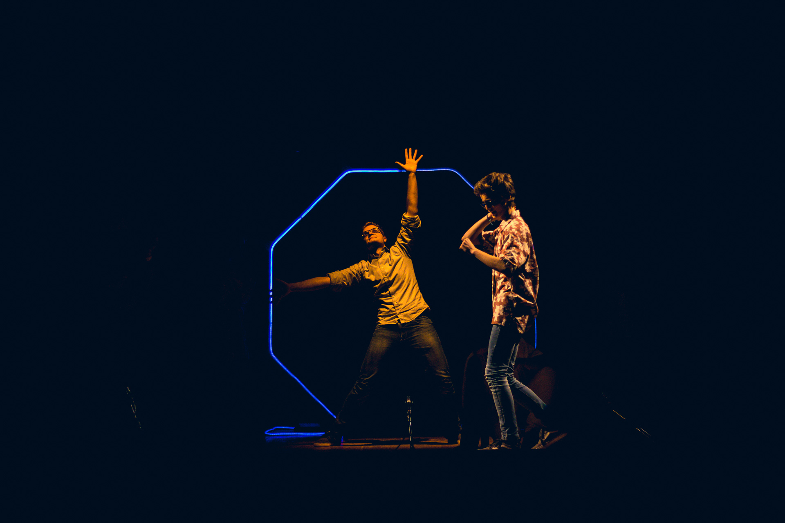

<section>
	<div class="quote">
		
		<blockquote cite="Lewis Carroll, Alice's Adventures in Wonderland">
			<p>
				"Subito Alice vi si infilò dentro, senza neppure darsi pena di chiedersi
				come diavolo avrebbe fatto a riuscirne.."
			</p>
		</blockquote>
		<cite>– Lewis Carroll, Alice's Adventures in Wonderland</cite>
		</div>
	<article>
		<p class="no-padding">
			Rabbit Hole è una giovane associazione filodrammatica
			nata nel territorio di Bassano del Grappa.
		</p>
		<p class="no-padding">
			Il nostri obiettivi sono finalizzati alla promozione della recitazione in tutte le sue forme ed è per questo
			che i corsi annuali si interessano al mondo dello spettacolo a 360°: dalla recitazione teatrale a quella cinematografica,
			dalla danza-teatro al canto, fino allo studio di una corretta dizione.

		</p>
		<p class="no-padding">
			Miriamo a organizzare workshop e laboratori che mettano in
			contatto fra loro appassionati ed esperti di settori che non riguardano solo il teatro tradizionale, ma ogni disciplina
			collegato a questo vastissimo mondo di esperienze e sperimentazioni.
		</p>
	</article>
	
	<article>
			<p class="no-padding">
				Non solo, Rabbit Hole si dedica a creativi e professionisti di
				videomaking e set design, offre il proprio spazio come luogo dedicato alla ricerca, mirando alla creazione di 
				nuovi progetti
				teatrali, piccole rassegne e nuove collaborazioni.
			</p>
		<p class="no-padding">
			Ciò che ti proponiamo sono vere esperienze di formazione ma anche occasioni per conoscere e approfondire mondi non troppo distanti dal tuo.
		</p>
		<p class="no-padding">
			Segui i tuoi sogni...</br>
			Racconta la tua storia.
		</p>
		<p>
			A presto,</br>
			Rabbit Hole
		</p>
	</article>
</section>
{% include corsi-in-partenza.html %}
